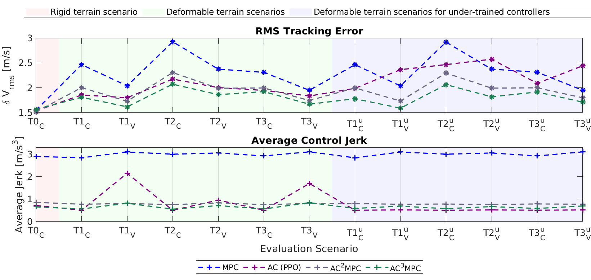

Learning Augmented Model-Based Optimization Controls (2022-2026)
Problem statement: Off-road autonomy missions face many unknown terrains and dynamics where nominal models for mobility controls do not suffice. Can we utilize reinforcement learning to enable fast adaptation of MPC and life-long learning for performant vehicle controls?
Approach: Vision informed residual learning
- Reducing data dependency by leveraging nominal models and increasing generalization of the controller across different driving conditions
- Formulating and investigating hybrid reinforcement learning control architecture to handle modeling mismatches and unmodeled system dynamics
- The results show that learning augmented controls not only outperform model based (MPC) a purely learnt (AC) controllers across previously unseen scenarios, but also improve smoothness of control.

- Using vision foundation models to inform offline and online life-long learning for adaptation to tasks and terrains
- Validating in simulation and on a drive-by-wire Polaris RZR vehicle on off-road terrains